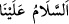
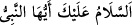
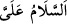
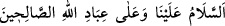
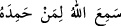

“teslîm” övmek demek olup temizlemek, havâle etmek, tevâzu göstermek, selâmet
vermek mânâsınadır.
el-Fütûhâtü’l-Mekkiyye’de şöyle denilir: “Selam mü’minlere meşrû kılınmıştır;
çünkü peygamberler insanlara hevâ ve heveslerine muhâlif olan şeyleri emrettikleri için
peygamberlerin makamı onlara îtirazı ortaya çıkarır. “
” diyen mü’min
sanki şöyle demektedir: “Ey Allâh’ın Rasûlü, sen benim nefsimde benden sana bir itiraz
olmaktan güvendesin.” Allâh’ın sâlih kullarına selam da böyledir. Onlar da
peygamberlere vâris olmaları hükmüyle insanlara hevâ ve heveslerine muhâlif olan
şeyleri emrederler. “
” diyerek kendimize selam vermemiz ise bizim içimizde
bizden kendimize itiraz etmemizi ve kınamamızı gerektirecek şeyler bulunduğu içindir.
Onun için tahiyyâtta kendimize selam vermek ve itiraz etmemek gerekli kılınmıştır.
Nitekim insan: “Kendi nefsime şöyle dedim, ‘Hayır’ dedi.” der.
Hz. Peygamber (s.a.)’in namazdaki teşehhüdünde bizim gibi “
(Ey
Peygamber sana selam olsun)” mu diyordu, yoksa “
(Bana selam olsun)” mu
diyordu ya da bunları hiç söylemiyordu da “
(Selam bize ve
Allâh’ın sâlih kullarına olsun) sözüyle mi yetiniyordu, buna vâkıf olamadık.
Eğer bize söylememiz emredildiği gibi söylüyor idiyse bunun iki yönü/izahı vardır:
Birincisi, “
(Allah kendisine hamd edeni işitti/işitir) sözünde olduğu gibi
O’na selam verenin Hak Teâlâ olması, Hz. Peygamber (s.a.)’in ise O’nun tercümanı
olmasıdır. İkincisi, Hz. Peygamber (s.a.) namazında mesela meleklerin makamında
ikame edilirdi. Sonra ikame edildiği makamdan da yine nebî olması bakımından
kendisine hitab eder ve yabancı bir kimsenin yaptığı gibi “
” der. Bu
durumda sanki Hz. Peygamber (s.a.) kendi nefsinden başka bir şahsı tecrid etmiş
gibidir.”el-Fütûhât’ın sözü burada sona erdi.
“Selâmın diriye mahsus olduğunu söylerler. Hz. Peygamber (s.a.) ise vefat etmiştir.
Nitekim şu âyette: “Muhakkak sen de öleceksin” (ez-Zümer, 39/30) buyurulmaktadır.”
denilirse, bu söze şöyle cevap verilir: Mü’minin ruhu cesedinden ayrılsa da hakîkat
bakımından ölmez. O halde Hz. Peygamber (s.a.)’in mübarek bedeni çürüyüp
dağılmaktan ve toprağa karışmaktan korunmuştur. Berzah hayatıyla diri ve canlıdır. Hz.
Peygamber (s.a.)’in şu hadîsi de buna delâlet eder: “Allâh’ın gezici melekleri vardır.
Bana ümmetimin selamlarını ulaştırırlar.”[277] Başka bir hadîste de şöyle
buyrulmuştur: “Bir müslüman bana salât ve selam getirince Allah ruhumu bana iâde
eder ve ben o selama karşılık veririm.”[278] Bu hadîsten Hz. Peygamber (s.a.)’in
dünyevî berzahta devamlı diri olduğu anlaşılmaktadır. Çünkü gece gündüz bu varlık
âleminde Hz. Peygamber (s.a.)’e salât ve selam getirilmediği bir anın bulunması
imkansızdır. Buna göre Hz. Peygamber (s.a.)’in “Allah ruhumu bana iâde eder” sözü,
Hak Teâlâ berzah âleminde (kabirde) benim hissî hayalimin şuurunu, işitme ve konuşma